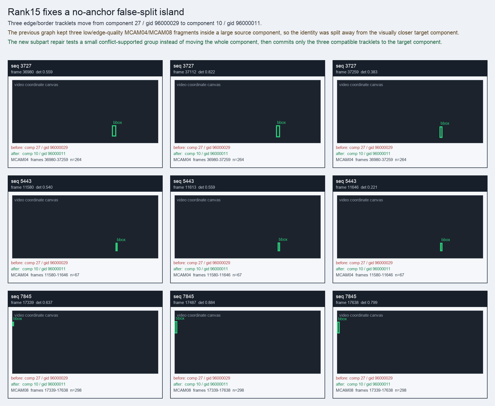
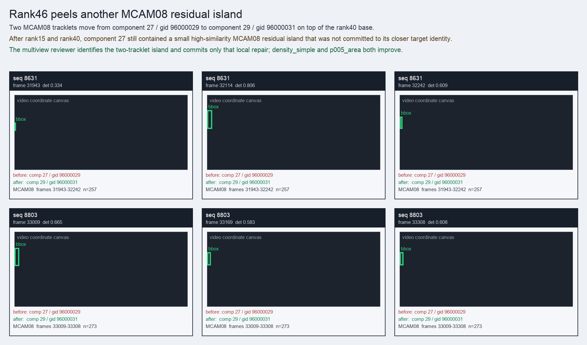

Failure mode and fix
Rank15 fixes a no-anchor false-split island
Three edge/border tracklets move from component 27 / gid 96000029 to component 10 / gid 96000011.
The previous graph kept three low/edge-quality MCAM04/MCAM08 fragments inside a large source component, so the identity was split away from the visually closer target component.
The new subpart repair tests a small conflict-supported group instead of moving the whole component, then commits only the three compatible tracklets to the target component.

cases/rank15_subpart_visual/case.htmlcases/rank15_subpart_visual/case.json
Rank40 fixes a tiny MCAM08 false-split island
Two MCAM08 tracklets move from component 5 / gid 96000005 to component 35 / gid 96000038 on top of the rank15 base.
The previous graph left a high-internal-similarity pair inside source component 5 even though delivery p005 preferred the target component after density filtering.
The multiview subpart repair commits only the two compatible MCAM08 tracklets, giving a tiny direct gain and a valid p005_area canonical gain.

cases/rank40_subpart_visual/case.htmlcases/rank40_subpart_visual/case.json
Rank46 peels another MCAM08 residual island
Two MCAM08 tracklets move from component 27 / gid 96000029 to component 29 / gid 96000031 on top of the rank40 base.
After rank15 and rank40, component 27 still contained a small high-similarity MCAM08 residual island that was not committed to its closer target identity.
The multiview reviewer identifies the two-tracklet island and commits only that local repair; density_simple and p005_area both improve.

cases/rank46_subpart_visual/case.htmlcases/rank46_subpart_visual/case.json